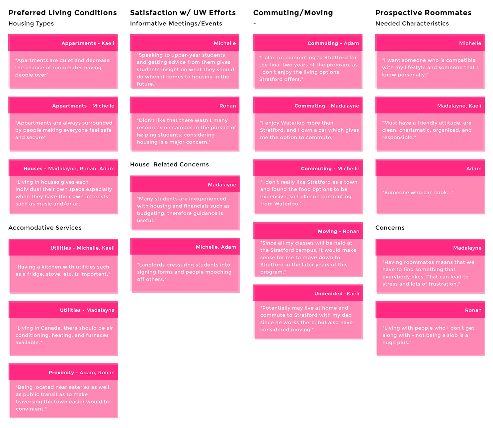
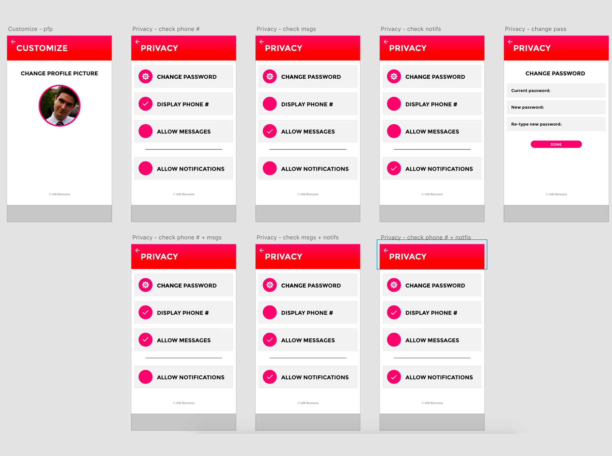

UW Rencana
Team Redesign
I worked in a team with Celina Nguyen, Zaid Amer and Helen Chen to design and prototype an application for mobile devices, called UW Rencana, that would connect students studying at The University of Waterloo's Stratford School of Interaction Design and Business who are looking for shared housing. I primarily focused on user research and low-fidelity prototyping, but assisted in the creation of high-fidelity prototypes a bit as well.
Tools Used
: Balsamiq
: Adobe XD
: Illustrator
: Photoshop
Personal/Shared Roles
: UX Design
: User Research
: Low-Fidelity Prototyping
: High-Fidelity Prototyping
Identifying Problems
The Global Business and Digital Arts program (GBDA) at the University of Waterloo is currently split between two campuses. Years one and two are conducted primarily in Waterloo, on the University's main campus, but the third and fourth years are conducted at The Stratford School of Interaction Design and Business, in Stratford Ontario. Students enrolled in GBDA at the University of Waterloo know first hand the issue of trying to find a permanent residence in Stratford for upper years. To boot, with the upcoming changes to the program curriculum, students will be moving to Stratford full time as early as their second year, meaning the problem of finding housing in Stratford will be amplified as increasingly larger class sizes will be moving into Stratford more and more frequently. While this may prove to cause some difficulties, it will also have the potential to create a strong community of GBDA students within Stratford. It is for this reason that our team chose to prototype a phone application called UW Rencana which is designed to connect students around Stratford. This application will allow GBDA students to find affordable shared housing.
User Interviews
Interviews were conducted in person with five different individuals (last names omitted for privacy): Michelle, Ronan, Madalayne, Adam, and Kaeli. All of these individuals have different backgrounds and experiences. All those interviewed have direct relations to the Global Business and Digital Arts program at the University of Waterloo. The interview is specifically aimed towards those students who are in the early years of the GBDA program to where they are going to start thinking about housing in their future years. The participants provided us with their opinions on what they think about their current housing situation as well as any concerns that they have at the moment when it comes to roommates, locations, etc.
Given the identified problems and our new site map, we made some changes to the website. Some changes we have made include a collapsable menu, as well as a landing page that features a photo of their food in a more appealing compared to Boomer's old slideshow header.
Affinity Diagrams

User Personas
The following four personas and scenarios have been created with the intentions of imitating some of the likely problems that students may face, and how the UW Reneca app will assist in resolving these issues.
Alyssa
Alyssa is a local student at the University of Waterloo living at home studying Global Business and Digital arts. On the side, she runs a highly successful blog on Tumblr where she gives teenagers tips about school and life in general.
Living at home or near the Waterloo main campus are options for Alyssa, however she will have to commute daily. However, as the Stratford campus is new and has no student housing nearby, she has no clue as of to where she would live. Stratford would also be an unfarmiliar place, and she'd feel out of the loop.
Evan
a second year student enrolled in the Global Business and Digital Arts program at the University of Waterloo. He plays on the University's soccer team and spends a lot of free time training and practicing. By consequence, he misses out on a lot of extracurricular events hosted by the GBDA program.
As Evan does not own a car, he is unable to commute, which has forced him to move to Stratford. However, if he wants to remain on the school's soccer team he will need a way to commute back to Waterloo for games and practices regularly. His second major problem is he knows very few people in GBDA, leaving him unable to find roommates.
Ibtesam
Ibtesam is a third year GBDA student who has spent a year living in city of stratford, as he is now a fulltime student at the stratford campus. He is entrepreneurial down to his fingertips and is currently involved in a business prospect involving the start up incubator at stratford.
Ibtesam will need to find new housing in Stratford. The past year in Stratford, he did not get along with his landlord. He is having trouble finding a new landlord, roommates, all while balancing planning for his business venture.
Lela
Lela is a second year GBDA student who has been living on residence at the University of Waterloo main campus for her first two years, in a single-room suite. She has mild epilepsy which she has been able to manage efficiently, since her parents moved to Waterloo with her in a nearby townhouse and have been able to help her manage her symptoms.
Lela’s parents have allowed her to move to Stratford for her third year of studies, however because of her epilepsy she has difficulty finding suitable accommodations and roommates for her needs. Unfortunately, most of Lela’s friends do not study in GBDA, which brings up the issue of finding roommates for Stratford.
Brainstorming and Prototypes
Initial brainstorming and wireframes:




Usability Testing
Our team issued two individual questionnaires to the users who tested our application. Before testing, along with their respective consent form, subjects were given a pre-test questionnaire which they were to fill out. After completing the tasks, users took a post-test questionnaire.
The pre-test questionnaire gave us a better idea of where our users were from, in terms of age, gender, and other questions to give us a general sense of who was to be testing our high-fidelity prototype. After the testing, the post-test questionnaire was composed of questions regarding the design of UW Rencana as well as its usability, to help us pinpoint our application’s strong and weak points. The usability testing saw the user’s complete a set of tasks that included navigating through the high-fidelity prototype and carrying out certain actions. We went on to analyze the gathered information from the usability testing and surveys.

A majority of surveyed users found the graphics of the application to be appealing to the point where they actually aided the process of navigating through the application, while the remainder of those who took the survey found them to pass as acceptable graphics, presumably adding nothing to the application, but not taking away from it either. There were no surveyed users who believed that the graphics actually rendered the application confusing, or who found the graphics to be poorly made.
While the prototype was relatively well received from a stylistic and user-friendly standpoint, the question of whether one would use it to actually hunt for housing still stood. It was for this reason that we provided a question asking users if they would make use of the application in the post-test questionnaire. The question was asked through a likert-scale format, giving the users five options ranging from ‘Strongly Disagree’ through ‘Strongly Agree’. While a majority of users replied positively (‘Agree’) there was no one who replied with ‘Strongly Agree’, meaning that while our application was good enough to be functional and appealing, it may not necessarily be the first choice for many students.